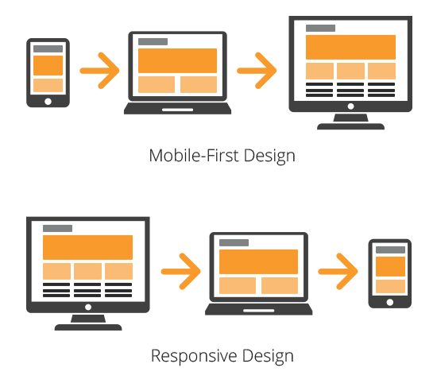
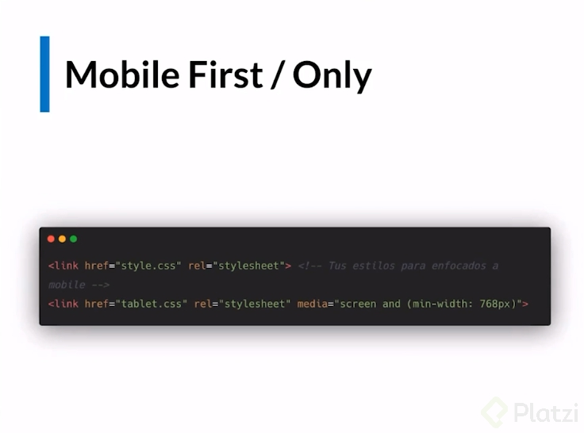

¿Qué es responsive design? El responsive design permite que los sitios web "se adapten" a diferentes tamaños de pantalla sin comprometer la usabilidad y la experiencia del usuario. El texto, los elementos de la interfaz de usuario y las imágenes se redimensionan y cambian de tamaño según la ventana gráfica. El responsive design permite a los desarrolladores escribir un solo conjunto de código HTML, CSS y JavaScript para múltiples dispositivos, plataformas y navegadores.
¿Qué son los breakpoint en responsive design? Es el "punto" en el que el contenido y el diseño de un sitio web se adaptarán de cierta manera para brindar la mejor experiencia de usuario posible. Básicamente, los breakpoints son valores de píxeles que un desarrollador / diseñador puede definir en CSS. Cuando un sitio responsive alcanza esos valores de píxeles, se produce una transformación para que el sitio web ofrezca una experiencia de usuario óptima.
Se debe optimizar para todos los dispositivos. Hay tiene que tener en claro un par de conceptos:
Lo más importante es diseñar para movil. Por lo que se debe diseñar con mobile first. Es decir, primero diseñar para celular, luego un break point para tablet y finalmente un break point para PC.
Para aplicar media queries con buenas prácticas, hay que hacerlo en el header. Porque así solo se descarga el código necesario según el dispositivo, mientras que en CSS se descarga todo sin importar nada.
En la tag link se colocan los atributos href, rel y, a partir del segundo archivo, el break point media="screen and (min-width: #px". El style.css debe estar hecho para mobile. Luego se pueden crear otros archivos como tablet.css o desktop.css.
 